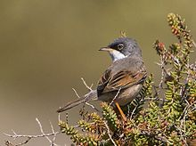
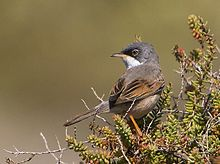

| Spectacled Warbler | |
|---|---|
|  | |
| Male on Gran Canaria | |
| Conservation status | |
| Binomial name | |
| Sylvia conspicillata Temminck, 1820, Sardinia |
| Spectacled Warbler | |
|---|---|
|  | |
| Male on Gran Canaria | |
| Conservation status | |
| Binomial name | |
| Sylvia conspicillata Temminck, 1820, Sardinia |
The Spectacled Warbler, Sylvia conspicillata, is a species in the typical warbler genus Sylvia. It breeds in north west Africa, southwest Europe from Iberia to Italy, and then further east on the eastern Mediterranean islands and coastal regions. It is mainly resident in Africa, but other populations migrate to winter in more widely in north and west Africa and Egypt. This bird is a rare vagrant to northern and western Europe.
It also occurs in some Atlantic islands. The subspecies orbitalis has been proposed for those of the Cape Verde Islands. The presumed subspecies for the Madeira birds, bella is today usually included in this taxon, as are the birds of the Canary Islands, where the species is quite common except on El Hierro and known as zarzalero y ratonero (Álamo Tavio 1975).
These are very small "warblers" and are intermediate between Whitethroats and Tristram's Warbler in coloration. Spectacled Warblers are brown above and buff below, with chestnut wing patches and a white throat. Adult males have a grey head and the white eye ring which gives the species its name. Immature birds can be confused with both the Whitethroat and the Subalpine Warbler, and identification is difficult in the field. The song is a fast high warble.
About the precise relationships of this bird, not much can be said with certainty. It seems though as if its intermediate appearance, apart from the autapomorphic white eye ring, indicates its relationships reasonably well. It is not the closest living relative of at least Tristram's Warbler though.(Helbig 2001, Jønsson & Fjeldså 2006)
These small passerine birds are found in dry open country with bushes. 3-6 eggs are laid in a nest in a bush. Like their relatives, the Spectacled Warbler is insectivorous.

{kind=link}